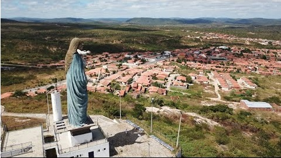

Informações técnicas sobre relevo, população, IDH etc.
| INFORMAÇÕES | |
|---|---|
| Municípios limítrofes | Tarrafas, Arneiroz e Aiuaba |
| Fundação | 3 de fevereiro de 1823 |
| Área total | 1 383,472 km² |
| Clima | Tropical quente semiárido |
| IDH | 0,575 — baixo |
| PIB | R$ 38 364,08 mil |
| INFORMAÇÕES TERRITORIAIS | |
|---|---|
| Número de habitantes | 15 819 habitantes |
| Superfície de Saboeiro |
138 348 hectares
1383,48 km² (534,16 sq mi) |
| Densidade populacional | 11,4 ha./km² |
| Altitude de Saboeiro | 298 metros de altitude |
| Coordenadas geográficas decimais |
Latitude:
-6.54132
Longitude: -39.9077 |
| Coordenadas geográficas sexagesimais | Latitude: 6° 32' 29'' Sul , Longitude: 39° 54' 28'' Oeste |
| INFORMAÇÕES DO MUNICÍPIO | |
|---|---|
| Endereço da Prefeitura Municipal de Saboeiro |
Saboeiro
Prefeitura de Saboeiro
Trav. Senador Miguel, 15 Saboeiro - CE, 63590-000 Brasil Work +55 88 3526-1268 Fax +55 88 3526-1121 |
| Telefone da prefeitura |
(88) 3526-1268
Internacional: +55 88 3526-1268 |
| Fax |
(88) 3526-1121
Internacional: +55 88 3526-1121 |
| Endereço electrónicoda prefeitura |
saboeiro.ce@ligbr.com
|
| Site oficial do município | saboeiro.ce.gov.br |
| INFORMAÇÕES DO ADMINISTRATIVAS | ||
|---|---|---|
| Prefeito de Saboeiro | MARCONDES HERBSTER FERRAZ | |
| Partido politico | PDT | |
| INFORMAÇÕES DE TRANSPORTE | |
|---|---|
| Transporte urbano disponível | |
| Aeroporto |
Aeroporto Regional do Cariri
103.2 km
Aeroporto de Picos
187.9 km
Aeroporto Dix-Sept Rosado
318.7 km
|
| INFORMAÇÕES DE DISTÂNCIA A OUTRAS CIDADES | ||
|---|---|---|
| São Paulo : 2026 km | Rio de Janeiro : 1856 km | Brasília : 1350 km |
| Salvador : 732 km | Fortaleza : 349 km mais perto | Belo Horizonte : 1541 km |
| Manaus : 2264 km | Curitiba : 2327 km | Recife : 580 km |
| Goiânia : 1520 km | Belém : 1109 km | Porto Alegre : 2871 km |
| Guarulhos : 2004 km | Campinas : 1977 km | São Luís : 661 km |
| Distância calculada em linha reta! | ||
Conheça mais sobre a história da Saboeiro.
Região inicialmente habitada pelos índios jucás[6]. Apos o seculo XVI quando navegantes franceses alcançaram o
litoral nordestino brasileiro. Algumas famílias de antigos nobres franceses habitaram a região. Famílias como
Braga Basto e a Linhagem Nocrato, habitaram pelo sertão. Ao decorrer do tempo as famílias se casaram entre si
e se apossaram de terras no interior dos estados nordestinos, uma dessas terras era saboeiro. A partir do
século XVIII, recebe novos habitantes oriundos de Pernambuco, que tinham como intuito a implantação da
pecuária do Ceará.
A cidade teve um grande avanço como ambiente urbano a parte da criação da fazenda "Uruguai" nomeada pelo seu
dono Raimundo Nocrato Soares Casado com a Senhora Maria Iracema Braga Nocrato.
Alem da fazenda o casal possuía o 2º Cartorio de Saboeiro onde eram feitas as escrituras da cidade, sendo de
grande eficacia para os habitantes do local.
A família de fundadores da cidade possui valor histórico ate os tempos atuais. Com grande participação
politica no Ceara.
Saiba mais sobre os melhores lugares e o que fazer em Saboeiro.
O principal evento cultural é festa da padroeira, Nossa Senhora da Purificação (2 de fevereiro).

Veja como chegar nos melhores pontos de Saboeiro.